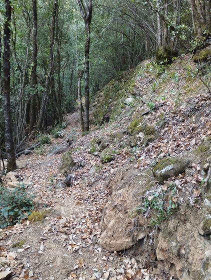
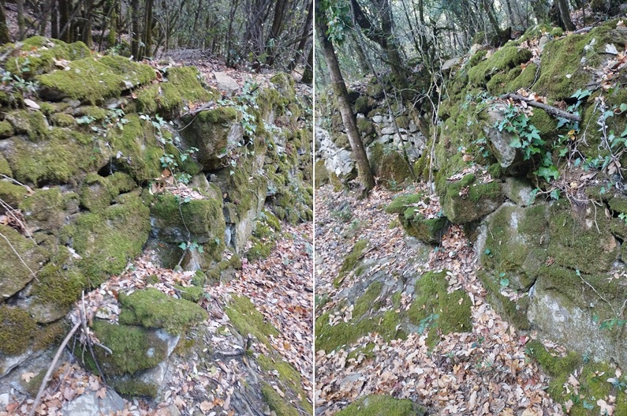
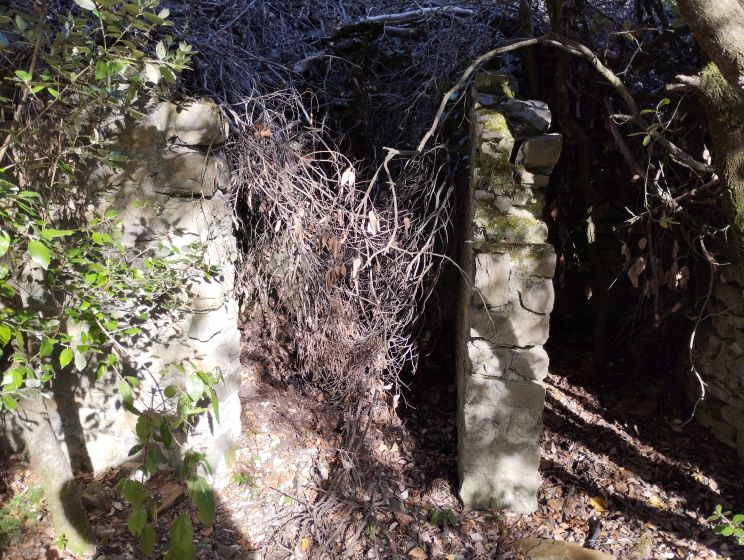
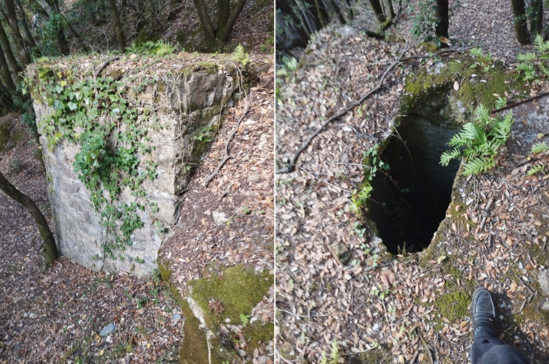
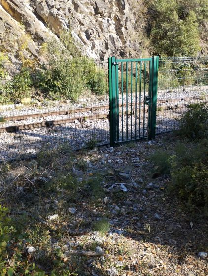

Au croisement du chemin de Planèses et du sentier des Oulious, par contre le sentier est indiqué

Au XIX° siècle le chemin vicinal n° 2 longeait l'Aude en rive droite de Saint Martin au Pont d'Alies, puis grimpait le col du Campérié avant de redescendre vers Lapradelle. Ce chemin sur Saint Martin passait par le pont de l'ane, se dirigeait ensuite vers les Oulious, traversait ce qui est aujourd'hui l'implantation de la gare de St Martin
Dernièrement la partie de cet ancien chemin entre le viaduc du Rébuzo et la gare a été nettoyé.
Il part du sentier menant aux Oulious au Ras du viaduc de Rébuzo (attention de ce coté le sentier n'est pas indiqué, il faut savoir qu'il commence dés l'arche du viaduc passé en venant de Saint Martin : le chemin est immédiatement à gauche du chemin des Oulious, un peu en hauteur)
Au croisement du chemin de Planèses et du sentier des Oulious, par contre le sentier est indiqué
Photos du trajet de ce chemin à flan de montagne
Sentier de l'ancien chemin vicinal n°2
Ancien escalier permettant d'accéder au champ au dessus du sentier
Construction le long du sentier
Ancienne citerne proche de la gare
Le sentier se termine en cul de sac sur la cloture entourant la gare
L'ancien chemin se poursuivait en passant sous le pont du Bourrec. Mais actuellement il a été emporté par l'Aude dès après le pont. Plus loin on peut encore retrouver les traces de ce chemin, mais il reste très caché dans les broussailles jusqu'au pont d'Aliès où on peut trouver de beaux restes de constructions (digues et ruines de bergerie)